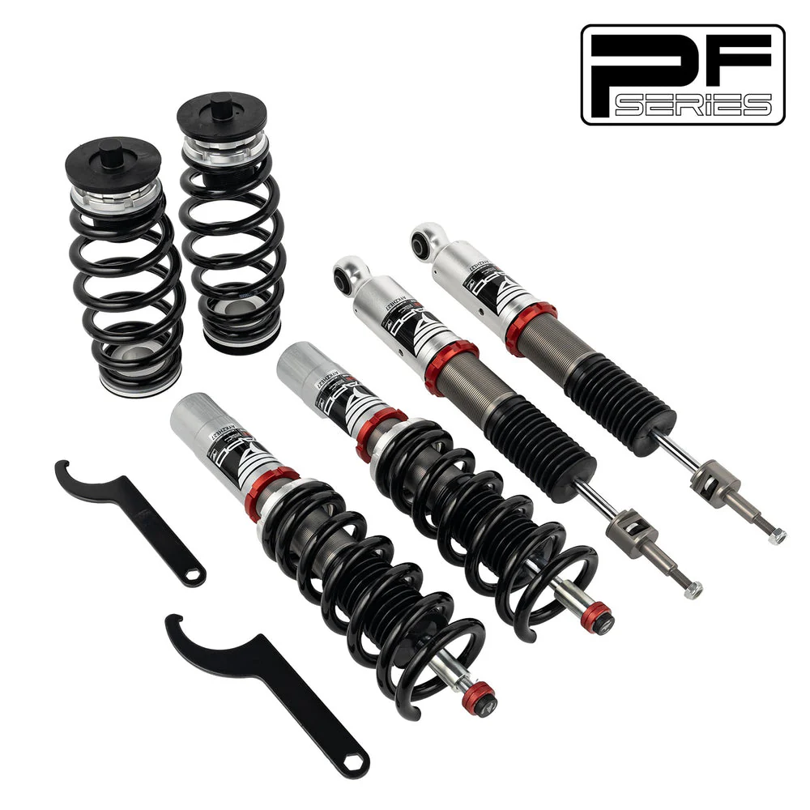

1 / 1932-Way Adjustable tłumienie Zawieszenie gwintowane do Audi A4 4th Gen FWD B8/8K 2008-2016 & Audi S4 B8/8K 2009-2016 PF014330
Zastosowanie: Audi A4 czwartej generacji FWD B8/8K 2008-2016 Audi A5/Sportback AWD B8 2007+ Audi S4 B8/8K 2009-2016 Zawartość zestawu: Gwinty przednie × 2 szt Gwinty tylne × 2 szt Klucz × 2 szt * Notatka: Nasz zestaw gwintowany to zestaw obniżający, który zmniejszy wysokość Twojego samochodu o 1-1,5 cala w porównaniu do wysokości fabrycznej, nawet przy ustawieniu maksymalnym. Przed zakupem potwierdź, że chcesz obniż…
Application: Audi A4 4th Gen FWD B8/8K 2008-2016 Audi A5/Sportback AWD B8 2007+ Audi S4 B8/8K 2009-2016 Package Includes: Front coilovers × 2 pcs Rear coilovers × 2 pcs Wrench × 2 pcs * Note: Our coilover is a lowering kit that will reduce your car's height by 1-1.5" compared to factory height, even at the maximum setting. Please confirm you want to lower your vehicle before purchase. Features: Mono-tube shock design provides larger oil and gas capacity. Adjustable ride height for customized performance. Adjustable pre-load spring tension for enhanced handling. High tensile performance spring - tested continuously 600,000 times with less than 0.04% distortion. Special surface treatment improves durability and performance. All inserts come with fitted rubber boots to protect the damper and keep it clean. Improves handling without sacrificing ride comfort. Fast and affordable way to upgrade your car's appearance. Easy installation with the right tools. Ideal for track, drift, fast road use, and daily driving. Accessories shown in photos are included. Default 1-year warranty for any manufacturing defect, upgrade to 2 years with our Extended Warranty Program. Technical Specifications: Spring Rate Front: 8 kg/mm (446 lbs/in) Spring Rate Rear: 10 kg/mm (557 lbs/in) Adjustable Height: Yes Adjustable Camber Plate: Front coilovers only; Rear uses standard top mounts Adjustable Damper: 32 levels of damping force adjustment
2599,99 PLN
Opis produktu
Zastosowanie:
- Audi A4 czwartej generacji FWD B8/8K 2008-2016
- Audi A5/Sportback AWD B8 2007+
- Audi S4 B8/8K 2009-2016
Zawartość zestawu:
- Gwinty przednie × 2 szt
- Gwinty tylne × 2 szt
- Klucz × 2 szt
* Notatka:Nasz zestaw gwintowany to zestaw obniżający, który zmniejszy wysokość Twojego samochodu o 1-1,5 cala w porównaniu do wysokości fabrycznej, nawet przy ustawieniu maksymalnym. Przed zakupem potwierdź, że chcesz obniżyć pojazd.
Cechy produktu:
- Konstrukcja amortyzatora jednorurowego zapewnia większą pojemność oleju i gazu.
- Regulowana wysokość jazdy dla spersonalizowanych osiągów.
- Regulowane napięcie sprężyny wstępnego obciążenia dla lepszej obsługi.
- Sprężyna o wysokiej wytrzymałości na rozciąganie - testowana w sposób ciągły 600 000 razy przy zniekształceniu mniejszym niż 0,04%. Specjalna obróbka powierzchni poprawia trwałość i wydajność.
- Do wszystkich wkładek dołączone są gumowe buty chroniące amortyzator i utrzymujące go w czystości.
- Poprawia prowadzenie bez utraty komfortu jazdy.
- Szybki i niedrogi sposób na poprawę wyglądu Twojego samochodu.
- Łatwa instalacja przy użyciu odpowiednich narzędzi.
- Odpowiedni na tor, driftu, szybkiej jazdy po drogach i codziennej jazdy.
- W zestawie akcesoria widoczne na zdjęciach.
- Standardowa roczna gwarancja na każdą wadę produkcyjną, możliwość rozszerzenia do 2 lat w ramach naszego programu rozszerzonej gwarancji.
Dane techniczne:
- Przód szybkości sprężyny:8 kg/mm (446 lbs/in)
- Stopień sprężyny z tyłu:10 kg/mm (557 lbs/in)
- Regulowana wysokość:Tak
- Regulowana płyta Camber:Tylko przednie gwintowane; Z tyłu zastosowano standardowe mocowania górne
- Regulowany amortyzator:32 poziomy regulacji siły tłumienia
Application:
- Audi A4 4th Gen FWD B8/8K 2008-2016
- Audi A5/Sportback AWD B8 2007+
- Audi S4 B8/8K 2009-2016
Package Includes:
- Front coilovers × 2 pcs
- Rear coilovers × 2 pcs
- Wrench × 2 pcs
* Note: Our coilover is a lowering kit that will reduce your car's height by 1-1.5" compared to factory height, even at the maximum setting. Please confirm you want to lower your vehicle before purchase.
Features:
- Mono-tube shock design provides larger oil and gas capacity.
- Adjustable ride height for customized performance.
- Adjustable pre-load spring tension for enhanced handling.
- High tensile performance spring - tested continuously 600,000 times with less than 0.04% distortion. Special surface treatment improves durability and performance.
- All inserts come with fitted rubber boots to protect the damper and keep it clean.
- Improves handling without sacrificing ride comfort.
- Fast and affordable way to upgrade your car's appearance.
- Easy installation with the right tools.
- Ideal for track, drift, fast road use, and daily driving.
- Accessories shown in photos are included.
- Default 1-year warranty for any manufacturing defect, upgrade to 2 years with our Extended Warranty Program.
Technical Specifications:
- Spring Rate Front: 8 kg/mm (446 lbs/in)
- Spring Rate Rear: 10 kg/mm (557 lbs/in)
- Adjustable Height: Yes
- Adjustable Camber Plate: Front coilovers only; Rear uses standard top mounts
- Adjustable Damper: 32 levels of damping force adjustment
FAPO Polska
Ten produkt obsługujemy lokalnie
Autoryzowana obsługa
FAPO Polska prowadzi katalog, kontakt i zamówienia bez odsyłania klienta do zewnętrznych sklepów.
Dobór po aucie
Sprawdzamy dopasowanie produktu do pojazdu, rocznika i wersji przed finalizacją zamówienia.
Wsparcie po zakupie
Masz kontakt w Polsce w sprawach zamówień, wysyłki, gwarancji i zwrotów.